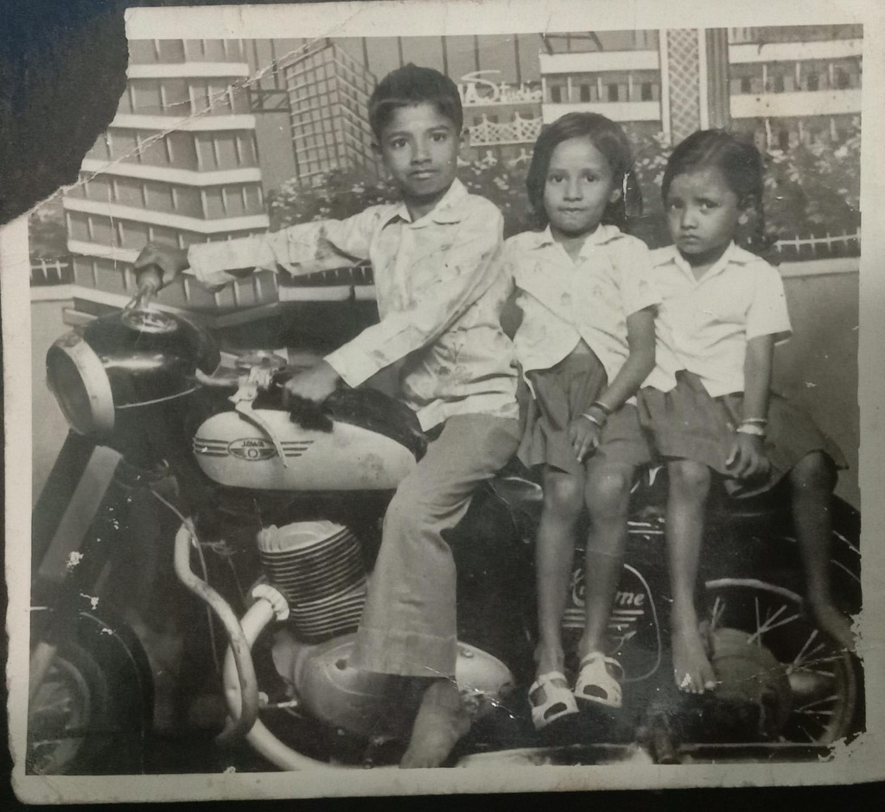
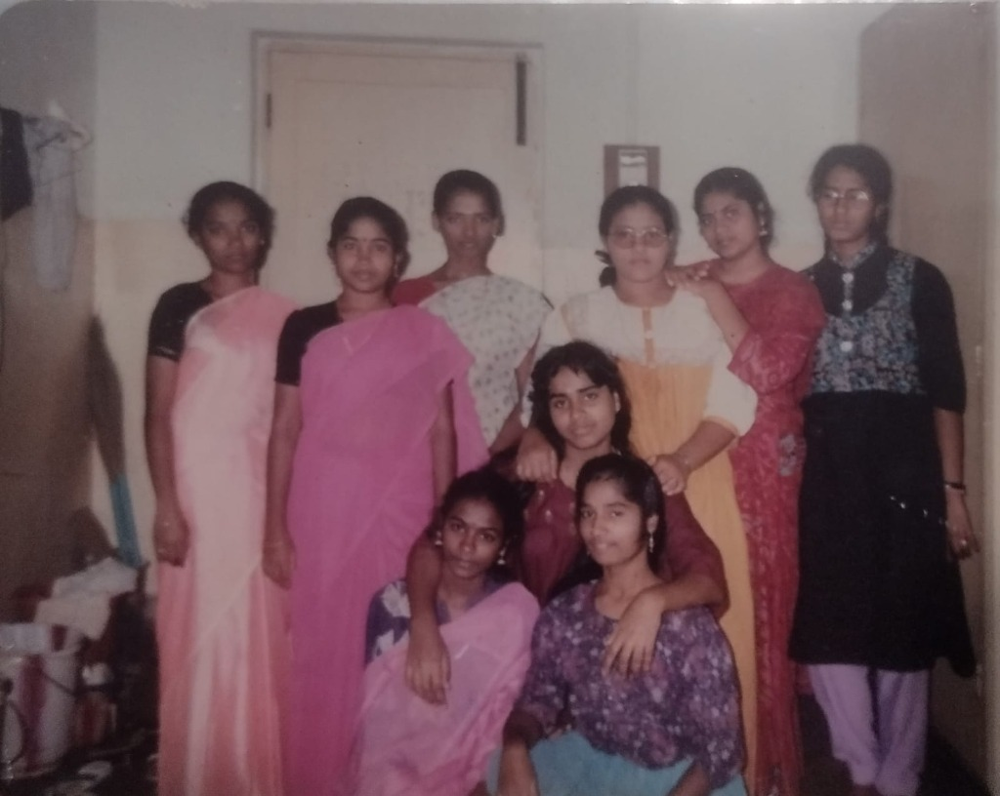
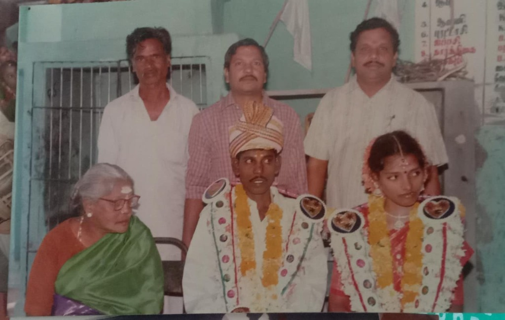
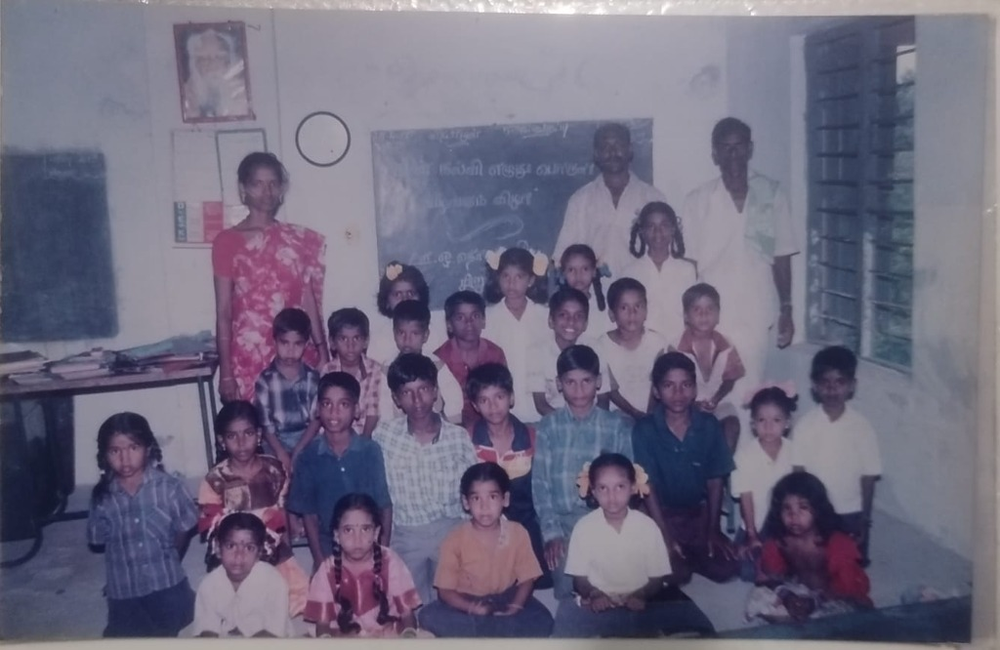
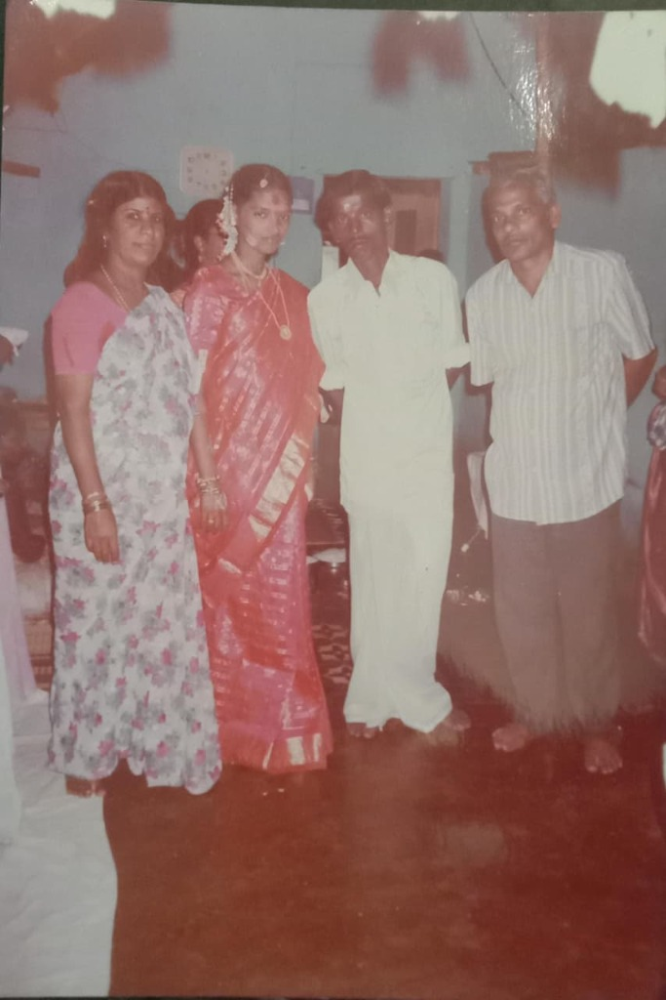
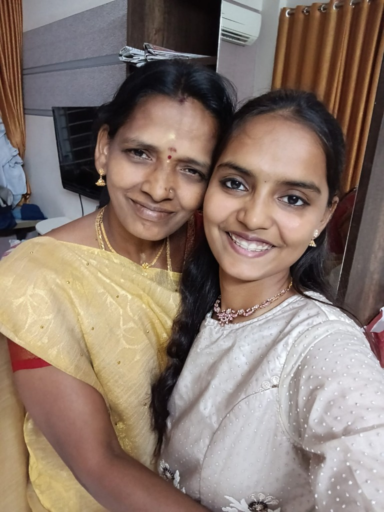
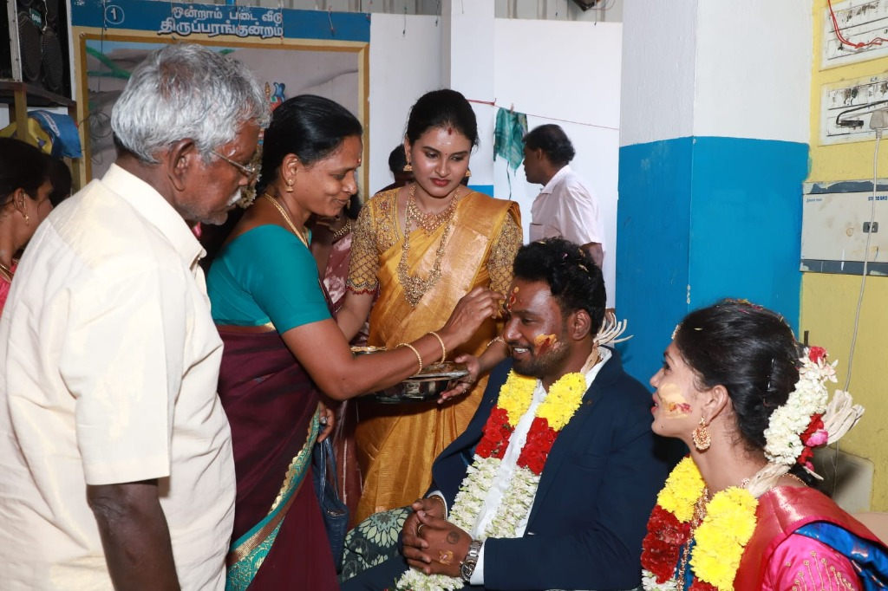
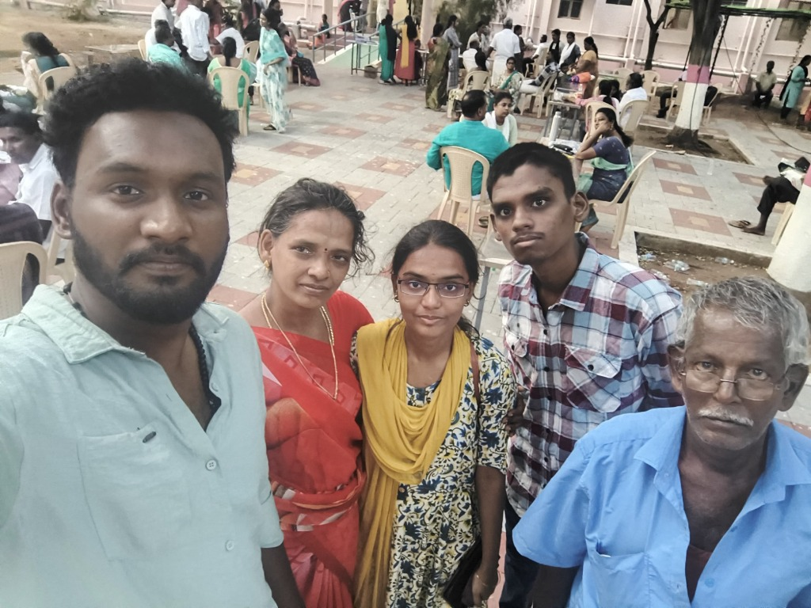
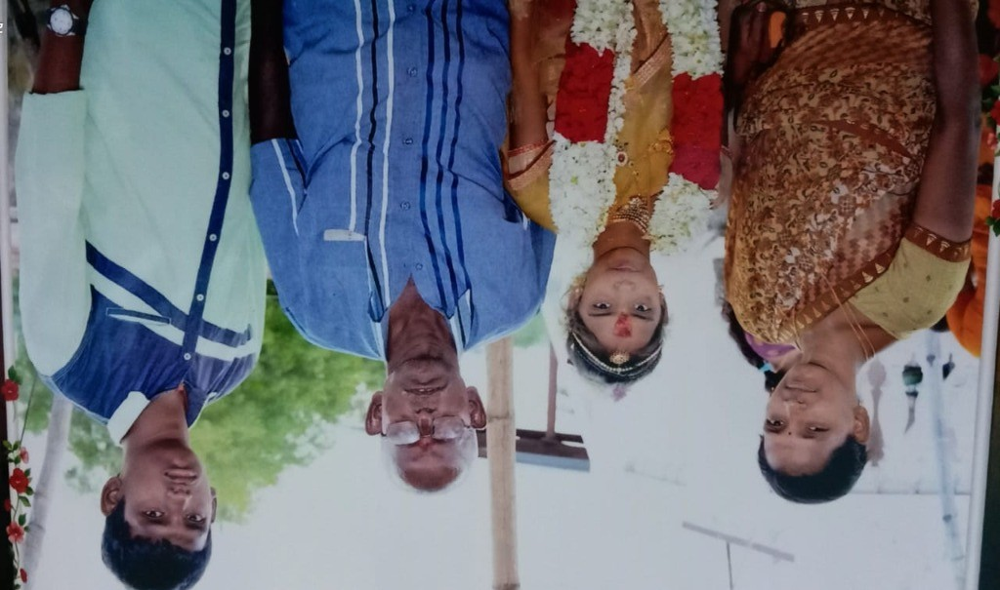
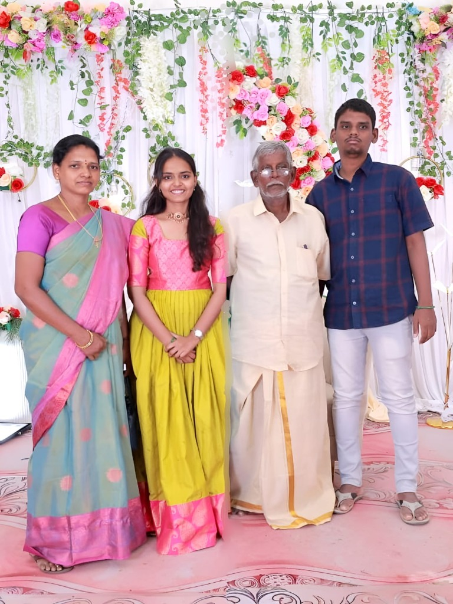

She was the youngest of three children.
Her parents had married later in her father's life.
Her beginning itself came with difficulties.
But somehow, she made it into this world.
"Some stories begin quietly.
Hers began by surviving."
Every life has a story.
But some stories deserve to be remembered.
Before she became my Mummy...
...she was a little girl with a story of her own.

her beginningShe was the youngest of three children.
Her parents had married later in her father's life.
Her beginning itself came with difficulties.
But somehow, she made it into this world.
"Some stories begin quietly.
Hers began by surviving."
When she was only three, she lost her mother.
She was too young to understand what she had lost.
Her father became her world.
Years passed with her father.
She remembers him simply —
white hair, white dhoti, and the familiar presence of Appa.
Then, while she was in third standard, she lost him too.
"But someone was about to change her path."
After losing her father, some relatives thought she could be sent away for household work.
But Jaya Perima refused.
She believed she deserved an education.
So she took her to Thaayagam.
Life at Thaayagam was not easy.
Food was limited. Old clothes felt precious.
But she studied, learned devotional songs, and found small moments of peace.
"She learned to live with less, without letting her dreams become less."

young AmmaShe grew up.
She joined college, studied, made friends, and finally experienced a little normal happiness.
"But life had another chapter waiting."

marriage dayShe and Appa had a 16-year age difference.
The marriage happened because of circumstances, not because it was the life she had imagined.
The beginning was difficult, with frequent fights and painful moments.
"A new chapter was waiting for her."

Sirumangalam Government JobAt one point, someone questioned how the marriage could work without a job.
Within the very next month, she got a government job.
Her first posting was at Sirumangalam.

Anna (1999)Then, she became a mother.
Her first son was born.
A new responsibility. A new reason to keep going.

Me (2007)Eight years later, I arrived.
Our little family was complete.
Life was simple — small fights, small happiness, and countless ordinary memories.
"Nothing extraordinary. Yet everything meant everything."
Memories lying on a table in sunlight

little moments
our home ordinary days
ordinary days
 her smile
her smile

worry & fearMy brother faced health problems.
Once again, Mummy became deeply worried.
The person who had always taken care of everyone was suddenly struggling herself.
Our whole family was worried.
But her story does not end here.

Mummy todayMummy,
You have already been strong for longer than anyone knows.
You don't have to carry everything alone anymore.
You have us.
You spent so many years making sure we were okay.
Now it's our turn to walk beside you.
Whatever comes next, we'll face it together.
Your story is not ending here.
This is only the beginning.

Before you were our Mummy,
you were a little girl who survived so much.
You grew.
You kept going.
You built a family.
You became our Mummy.